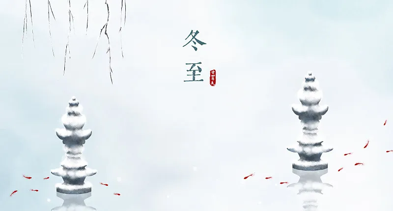
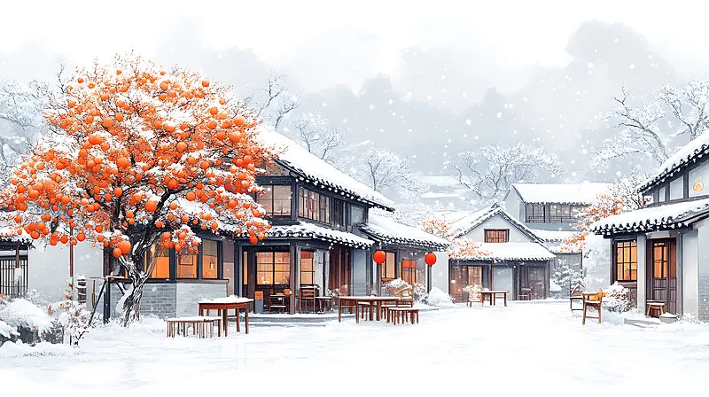

冬至节
———阳生岁始迎新春
历史溯源
七冬至节起源于周代"日祭"传统，《周礼》记载"以冬日至，致天神人鬼"。汉代确立为"冬节"，官府举行"贺冬"仪式，《后汉书》记载"冬至前后，百官绝事，不听政"。唐宋时期发展为重要节气节日，《东京梦华录》详述汴京"冬至馄饨"食俗。明清时"数九"习俗普及，故宫藏《九九消寒图》证实皇家有每日填梅的迎春传统。
民俗传统：
测日祈福：
河南登封观星台延续周公测影传统，用圭表测量全年最长日影；
南北食俗：
老北方"冬至饺子夏至面"寓意消寒，南方"冬至团子"象征团圆，苏州"冬酿酒"需加入桂花 ；
数九消寒：
京津地区流行填写"亭前垂柳珍重待春风"九字书法，每字九画对应九九八十一天；
祭祖报本：
安徽徽州祠堂举行"冬至烝祭"，按《朱子家礼》行三献之礼。
文化价值
节日蕴含"冬至阳生"的哲学智慧，湖北云梦睡虎地秦简《日书》记载了最早的冬至占候术。韩国仍保留冬至食用红豆粥驱邪的"동지팥죽"习俗，日本宫廷延续唐代"冬至御药"传统。现代天文学证实，冬至是北半球太阳直射点南移的转折时刻。
创新发展
国家授时中心推出"日晷AR"APP，可实时模拟古代圭表测影；苏州博物馆复原清代《九九消寒图》互动装置，游客扫码即可参与线上填梅。2023年"二十四节气美食地图"项目，通过分子料理技术重现历代冬至宴席精髓。中医药大学研发"冬至养生膏方"，将张仲景《伤寒论》古方转化为现代制剂。

